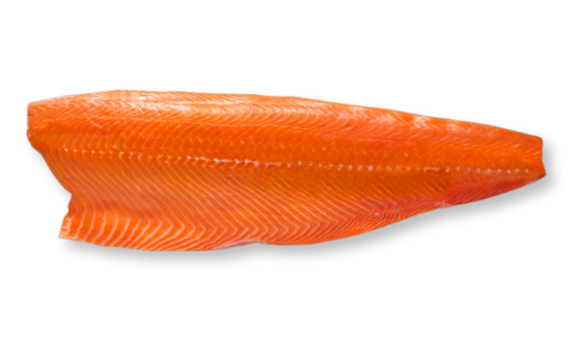
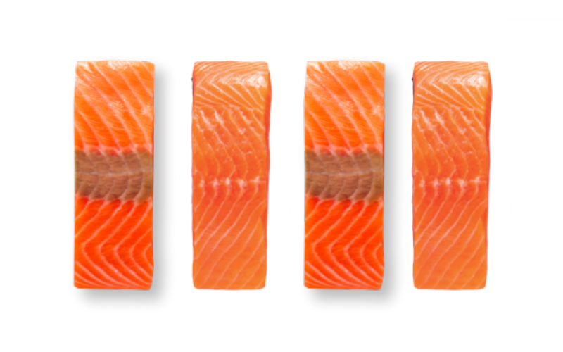
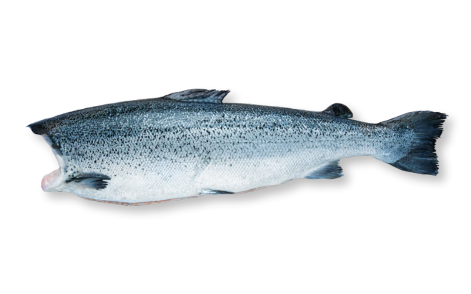
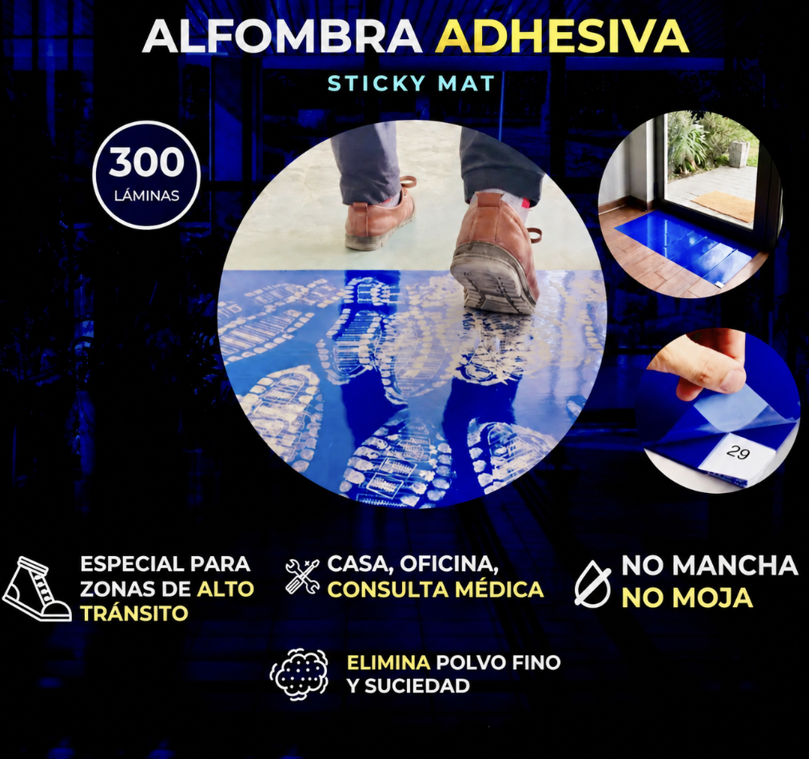

Sourcing especializado
Identificación de productores y elaboradores alineados con el producto, calibre, certificación y destino.
Sociedad ATID SpA · Chile
Brokering de salmón fresco y congelado para compradores internacionales que necesitan origen confiable, negociación por volumen y una operación de frío cuidada de punta a punta.
Qué hacemos
ATID busca proveedores, negocia precios por volumen y acompaña operaciones de exportación de salmón congelado y fresco. El foco está en productos de calidad consistente, documentación clara y relaciones de largo plazo.
La experiencia del equipo combina producción, proceso, comercialización y mirada normativa, con apoyo personalizado para compradores, plantas elaboradoras y nuevos canales comerciales.
Servicio integral
Identificación de productores y elaboradores alineados con el producto, calibre, certificación y destino.
Coordinación comercial para filetes, porciones, H&G, recortes y formatos congelados o frescos.
Seguimiento de contenedores refrigerados, documentación y condiciones operativas críticas.
Revisión de certificaciones, estándares sanitarios y consistencia de producto antes de avanzar.
Productos de salmón
La línea incluye filetes en calibres comerciales, porciones empacadas al vacío, H&G, recortes, bloques y hamburguesas elaboradas con salmón del Atlántico.

Atlantic Salmon Fillet

Atlantic Salmon

Atlantic Salmon
Certificaciones y calidad
ATID evalúa certificaciones y trazabilidad para que cada operación avance con información verificable, estándar sanitario y claridad para compradores internacionales.

Insumos para industria
Una línea complementaria para entornos donde el ingreso de polvo y contaminantes debe reducirse desde el primer paso: plantas de alimentos, consultas clínicas, laboratorios, observatorios y áreas limpias.
Trayectoria
ATID evoluciona desde la importación gourmet y productos kosher hacia una operación concentrada en brokering de salmón chileno, manteniendo la cultura de relación directa con proveedores y clientes.
Distribución de productos importados para supermercados, hoteles y clientes especializados.
Importación y representación de productos avícolas kosher en retail y canal institucional.
Desarrollo de categorías gourmet congeladas y listas para servir en Chile.
Intermediación para mercados internacionales, con foco en calidad, volumen y trazabilidad.
Contacto comercial
Comparte el formato que buscas, calibre, certificación requerida y mercado de destino. ATID puede orientar la búsqueda y abrir una conversación comercial con proveedores adecuados.